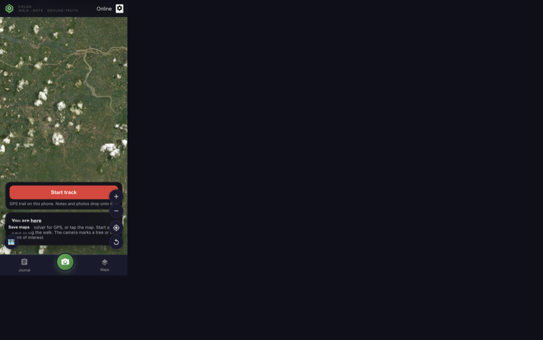
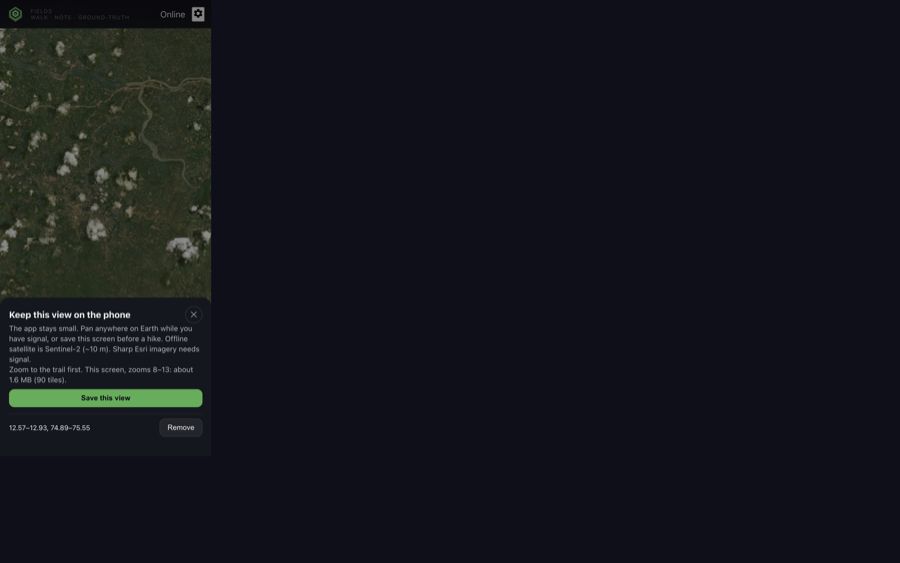
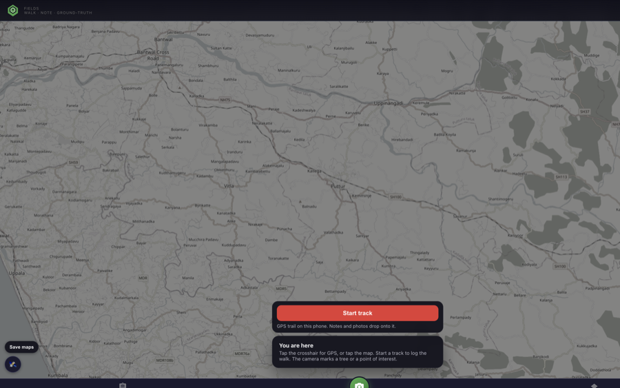
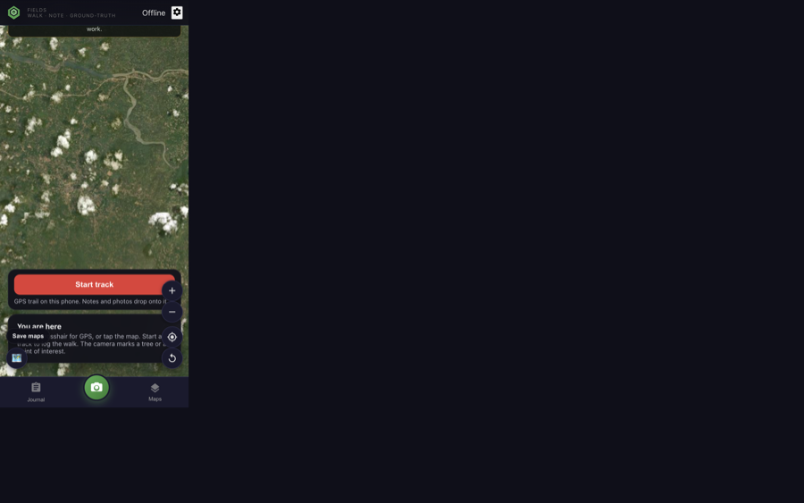

Flow 3 · maps on the phone
Fields does not ship the planet in the APK. OpenStreetMap streets and Sentinel-2 (~10 m) land in phone storage as you pan, or when you tap Save maps. Sharp Esri aerial is live-only.

Satellite · Esri when online, Sentinel-2 kept underneath for offline
Online you get sharp Esri imagery. The phone also quietly keeps Sentinel-2 for this view so the map is not blank when coverage drops.

Save maps · size estimate, then streets + Sentinel-2 for this bbox
Zoom to the trail. The sheet tells you roughly how many megabytes. Cap is ~9000 tiles so a continent cannot fill the disk.

Streets · OpenStreetMap (ODbL), cached like satellite
Street tiles come from OSM.org with a Fields user-agent. They darken to match the rest of the app. Attribution stays on the map.

Airplane mode · cached tiles + GPS + notes still work
Places you already viewed or saved keep streets and Sentinel-2. GPS tracks and photos do not need a cell tower.